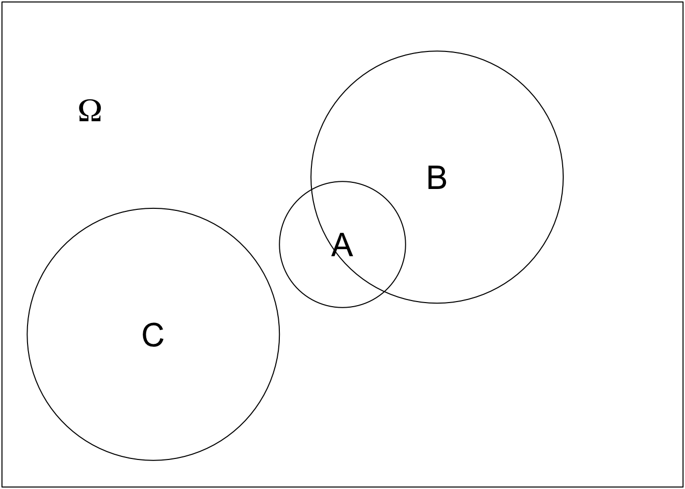

Kapitel 3 Wahrscheinlichkeit
3.1 Definition
Manche Ereignisse sind weniger wahrscheinlich als andere. Wie hoch die Wahrscheinlichkeit eines Ereignisses ist, wird durch eine Abbildung (Funktion) angegeben.
Eine Abbildung \(P: A \mapsto P(A)\) heißt Wahrscheinlichkeitsmaß, wenn gilt
Nichtnegativität: \(P(A)\ge 0\) für alle Ereignisse \(A\)
Normierung: \(P(\Omega)=1\)
Additivität: Für disjunkte Ereignisse \(A\) und \(B\) (d.h. \(A\cap B=\emptyset\)) ist \(P(A\cup B)=P(A)+P(B)\)
Diese Eigenschaften, die eine Wahrscheinlichkeitsabbildung erfüllen muss, sind intuitiv sinnvoll und können nicht aus irgendwelchen Fakten hergeleitet werden, daher spricht man auch von Axiomen. Etwas allgemeiner und präziser wurden diese Axiome 1933 von Andrey Kolmogorov für eine saubere mathematische Fundierung der Wahrscheinlichkeitstheorie eingeführt.
Aus diesen Axiomen lassen sich einige Rechenregeln ableiten, zum Beispiel
Monotonität: Wenn \(A\subseteq B\), dann ist \(P(A)\le P(B)\)
Komplementärereignis: \(P(\bar A)=1-P(A)\)
Additionssatz: \(P(A\cup B)=P(A)+P(B)-P(A\cap B)\)
3.2 Venn-Diagramme
Ereignisse lassen sich - wie andere Mengen in der Mengenlehre auch - in Form von Venn-Diagrammen darstellen. Wenn die Ergebnismenge \(\Omega\) durch ein Rechteck repräsentiert wird, dann kann man Ereignisse als Teilmengen des Rechtecks darstellen. In dem folgenden Bild ist zum Beispiel das Ereignis \(A\) der kleine Kreis in der Mitte. 
In diesem Venn-Diagramm wird deutlich, dass die Ereignisse \(A\) und \(C\) nicht gleichzeitig eintreten können, \(A\) und \(B\) hingegen schon, denn ihre Schnittmenge ist nicht leer. Außerdem erkennt man, dass \(A\) eine kleinere Wahrscheinlichkeit hat als \(B\) und \(C\). Der Additionssatz \(P(A\cup B)=P(A)+P(B)-P(A\cap B)\) wird in dieser grafischen Sichtweise sehr einfach klar: Die Wahrscheinlichkeit von \(A\cup B\) (also \(A\) oder \(B\)) ergibt sich als die Summe aus den beiden Kreisflächen \(A\) und \(B\) abzüglich der Fläche der Schnittmenge, die sonst doppelt gezählt werden würde.
3.3 Laplace-Experimente
Eine besonders einfache Art von Zufallsvorgängen sind die sogenannten Laplace-Experimente.
Ein Zufallsvorgang heißt Laplace-Experiment, wenn es nur endlich viele Ergebnisse gibt (d.h. wenn \(|\Omega|=n\)) und wenn alle Elementarereignisse als gleich wahrscheinlich angenommen werden können.
 Ein typisches, einfaches Beispiel für ein Laplace-Experiment sind Würfelwürfe.
Es ist aus unserem Alltagswissen heraus plausibel, davon auszugehen,
dass alle Augenzahlen eines Würfels gleich wahrscheinlich sind. Auch
bei einer Münze ist es naheliegend, dass die Wahrscheinlichkeit für
Kopf und die Wahrscheinlichkeit für Zahl gleich sind. Hingegen würde
man beim Werfen eines Kronkorkens nicht unbedingt vermuten, dass beide Seiten
mit der gleichen Wahrscheinlichkeit oben liegen. Hier liegt also kein
Laplace-Experiment vor.
Ein typisches, einfaches Beispiel für ein Laplace-Experiment sind Würfelwürfe.
Es ist aus unserem Alltagswissen heraus plausibel, davon auszugehen,
dass alle Augenzahlen eines Würfels gleich wahrscheinlich sind. Auch
bei einer Münze ist es naheliegend, dass die Wahrscheinlichkeit für
Kopf und die Wahrscheinlichkeit für Zahl gleich sind. Hingegen würde
man beim Werfen eines Kronkorkens nicht unbedingt vermuten, dass beide Seiten
mit der gleichen Wahrscheinlichkeit oben liegen. Hier liegt also kein
Laplace-Experiment vor.Bei einem Laplace-Experiment ist die Wahrscheinlichkeit, dass ein Ergebnis \(A\) eintritt leicht zu ermitteln. Sie beträgt \[ P(A)=\frac{|A|}{|\Omega|}, \] also die Anzahl der Ergebnisse in \(A\) dividiert durch die Anzahl aller Ergebnisse. Um Aussagen über Wahrscheinlichkeiten zu treffen, muss man also abzählen, wie viele Ergebnisse in den Mengen sind. Das ist manchmal sehr einfach, kann aber bei großen Mengen kompliziert sein. In solchen Fällen hilft der Teilbereich der Mathematik weiter, den man “Kombinatorik” nennt. Wir gehen in diesem Kurs jedoch nicht näher auf kombinatorische Probleme ein, sondern beschränken uns auf Mengen, bei denen es einfach ist, die Anzahl ihrer Elemente zu bestimmen.
Beispiele:
Ein Würfel wird geworfen. Es handelt sich um ein Laplace-Experiment. Die Anzahl der Ergebnisse in \(\Omega\) beträgt 6. Sei \(A\) das Ereignis “Eine gerade Zahl wird geworfen,” also \(A=\{2,4,6\}\). Dann ist \[ \begin{align*} P(A)&=\frac{|A|}{|\Omega|}\\ &=\frac{3}{6}\\ &=0.5. \end{align*} \]
-
Zwei gleich aussehende Würfel werden geworfen. Nun spielt es eine Rolle, wie man die Ergebnismenge festlegt. Wir wählen \[ \begin{align*} \Omega=\{&11,12,13,14,15,16,\\ &21,22,23,24,25,26,\\ &31,32,33,34,35,36,\\ &41,42,43,44,45,46,\\ &51,52,53,54,55,56,\\ &61,62,63,64,65,66\} \end{align*} \] weil es sich dann um ein Laplace-Experiment handelt. Die Ergebnisse “24” und “42” sind zwar nicht unterscheidbar, wenn die Würfel gleich aussehen, aber wir können den zuerst geworfenen Würfel (oder den weiter links liegenden) als ersten Würfel bezeichnen. Dass alle 36 Ergebnisse gleich wahrscheinlich sind, können wir mit unserem Alltagswissen begründen, nicht aus der Mathematik heraus.
Sei \(A\) das Ereignis “Die Augenzahlen der beiden Würfel unterscheiden sich um 2,” d.h. \(A=\{13,24,31,35,42,46,53,64\}\). Dann gilt \[ \begin{align*} P(A)&=\frac{|A|}{|\Omega|}\\ &=\frac{8}{36}\\ &=\frac{2}{9}\\ &\approx 0.2222. \end{align*} \] Als Ergebnismenge wäre auch \[ \begin{align*} \Omega=\{ &11,12,13,14,15,16,\\ &22,23,24,25,26,\\ &33,34,35,36,\\ &44,45,46,\\ &55,56,\\ &66\} \end{align*} \] möglich gewesen, aber dann wäre die Annahme eines Laplace-Experiments nicht plausibel gewesen. Die Elementarereignisse “11” und “12” wären beispielsweise nicht gleich wahrscheinlich (ein Pasch tritt erfahrungsgemäß seltener auf).
Die Wahl der Ergebnismenge sollte immer so erfolgen, dass das weitere Vorgehen möglichst einfach und elegant ist. Wenn die Ergebnismenge so gewählt werden kann, dass ein Laplace-Experiment vorliegt, sollte man das tun.
3.4 Bedingte Wahrscheinlichkeit
Manchmal gibt es begrenzte Informationen über einen Zufallsvorgang. Dann kennt man nicht das realisierte Ergebnis, kann aber die Menge der möglichen Ergebnisse eingrenzen. Dadurch ändern sich die Wahrscheinlichkeiten für Ereignisse.
Wir betrachten zwei Ereignsse \(A\) und \(B\) mit \(P(B)>0\). Dann heißt \[ P(A|B)=\frac{P(A\cap B)}{P(B)} \] die bedingte Wahrscheinlichkeit von \(A\) gegeben \(B\)
Die Notation \(A|B\) steht nicht für ein bestimmtes Ereignis, sondern zeigt an, dass wir eine neue Art von Wahrscheinlichkeit betrachten, nämlich die bedingte Wahrscheinlichkeit. Beim Sprechen über Wahrscheinlichkeiten ist es nicht immer einfach (aber wichtig!), zwischen der Wahrscheinlichkeit \(P(A\cap B)\) und der bedingten Wahrscheinlichkeit \(P(A|B)\) zu unterscheiden. Wenn man \(P(A\cap B)\) meint, spricht man von der Wahrscheinlichkeit für \(A\) und \(B\). Wenn man \(P(A|B)\) meint, sagt man \(A\) gegeben \(B\), oder: \(A\) wenn \(B\), oder: \(A\) unter der Bedingung \(B\). Wenn man ausdrücklich angeben möchte, dass eine Wahrscheinlichkeit keine bedingte Wahrscheinlichkeit ist, nennt man sie auch eine unbedingte Wahrscheinlichkeit.
Beispiele:
Ein Würfel wird geworfen. Wir betrachten die beiden Ereignisse \(A=\{2,4,6\}\) (“gerade Zahl”), und \(B=\{4,5,6\}\) (“eine Zahl größer als 3”). Die bedingte Wahrscheinlichkeit von \(A\) gegeben \(B\) beträgt \[ \begin{align*} P(A|B)&=\frac{P(A\cap B)}{P(B)}\\ &=\frac{P(\{4,6\})}{P(\{4,5,6\})}\\ &=\frac{2}{3} \end{align*} \] und die bedingte Wahrscheinlichkeit von \(B\) gegeben \(A\) lautet \[ \begin{align*} P(B|A)&=\frac{P(B\cap A)}{P(A)}\\ &=\frac{P(\{4,6\})}{P(\{2,4,6\})}\\ &=\frac{2}{3}. \end{align*} \]
Zwei Würfel werden geworfen. Sei \(A\) das Ereignis “die Augensumme ist 10.” Sei \(B\) das Ereignis “einer der beiden Würfel (oder beide) zeigt eine 2.” Dann ist \[ \begin{align*} P(A|B)&=\frac{P(A\cap B)}{P(B)}\\ &=\frac{P(\{\})}{P(\{21,22,23,24,25,26,12,32,42,52,62\})}\\ &=0. \end{align*} \] Die bedingte Wahrscheinlichkeit für das Ereignis \(C\): “Augensumme ist 5” unter der Bedingung \(B\) ist \[ \begin{align*} P(C|B)&=\frac{P(C\cap B)}{P(B)}\\ &=\frac{P(\{23,32\})}{P(\{21,22,23,24,25,26,12,32,42,52,62\})}\\ &=\frac{2}{11}. \end{align*} \]
Bei einer Umfrage werden Personen zufällig ausgewählt und befragt. Sei \(A\) das Ereignis “die befragte Person ist weiblich.” Sei \(B\) das Ereignis “die befragte Person arbeitet in Teilzeit.” Zwischen der (unbedingten) Wahrscheinlichkeit \(P(B)\) und der bedingten Wahrscheinlichkeit \(P(B|A)\) besteht ein Unterschied. Die Wahrscheinlichkeit \(P(B)\) steht dafür, dass eine zufällig ausgewählte Person in Teilzeit arbeitet, und diese Person kann männlich oder weiblich sein. Dagegen ist \(P(B|A)\) die Wahrscheinlichkeit, dass eine zufällig ausgewählte Frau in Teilzeit arbeitet.
In den Medien werden häufig bedingte Wahrscheinlichkeiten berichtet, ohne dass das explizit erwähnt wird. Oftmals sind die berichteten bedingten Wahrscheinlichkeiten gar nicht die, für die man sich eigentlich interessiert, weil die Bedingung und das Bedingte quasi falsch herum angeordnet sind. Man interessiert sich für \(P(A|B)\), aber berichtet wird \(P(B|A)\).
Beispiele:
In den Medien wird berichtet, dass ein Corona-Schnelltest mit einer Wahrscheinlichkeit von xxx Prozent ein falsch positives Ergebnis liefert. Falsch positiv bedeutet, die Wahrscheinlichkeit wird unter der Bedingung angegeben, dass die getestete Person negativ ist. Wenn man Test an sich durchführt, interessiert man sich dagegen für die bedingte Wahrscheinlichkeit, infiziert zu sein, obwohl der Test negativ ausfällt, und natürlich auch für die bedingte Wahrscheinlichkeit, tatsächlich infiziert zu sein, wenn der Test positiv ausfällt.
In den Medien erfährt man, dass XX Prozent der Studierenden ein “akademisches Elternhaus” haben. Es handelt sich um die bedingte Wahrscheinlichkeit eines akademischen Elternhauses, wenn eine Person studiert. Für die Bewertung der Chancengleichheit ist hingegen die bedingte Wahrscheinlichkeit interessanter, dass ein Kind studiert, wenn es aus einem akademischen Elternhaus stammt - und zwar im Vergleich zu der bedingten Wahrscheinlichkeit, dass ein Kind studiert, wenn es aus einem nicht-akademischen Elternhaus stammt.
Wie kann man eine bedingte Wahrscheinlichkeit “umdrehen?” Wie verhält sich \(P(B|A)\) zu \(P(A|B)\)? Das sehen wir im folgenden Abschnitt 3.6.
Bedingte Wahrscheinlichkeiten sind auch nützlich, um die Wahrscheinlichkeit zu berechnen, dass mehrere Ereignisse gemeinsam passieren. Dazu formen wir die Definition der bedingten Wahrscheinlichkeit einfach um. Aus \[ P(A|B)=\frac{P(A\cap B)}{P(B)} \] wird \[ P(A\cap B)={P(B)P(A|B)} \] Das lässt sich auf mehr als zwei Ereignisse erweitern: \[ \begin{align*} P(A\cap B \cap C)&=P(C)P(B|C)P(A|B\cap C)\\ P(A\cap B\cap C\cap D)&=P(D)P(C|D)P(B|C\cap D)P(A|B\cap C\cap D) \end{align*} \] Diese Formeln sind bei näherer Betrachtung intuitiv: Die Wahrscheinlichkeit, dass \(A\), \(B\) und \(C\) gemeinsam eintreten, ergibt sich, indem man zuerst eine der unbedingten Wahrscheinlichkeiten nimmt (z.B. \(P(C)\)). Nun ist \(C\) quasi eingetreten und wir arbeiten unter der Bedingung \(C\) weiter. Die Wahrscheinlichkeit \(P(C)\) wird jetzt mit der bedingten Wahrscheinlichkeit des nächsten Ereignisses multipliziert, also \(P(B|C)\). Nun sind \(B\) und \(C\) eingetreten, und auf der nächsten Stufe multiplizieren wir deshalb mit \(P(A|B\cap C)\). Eine andere Reihenfolge der Bedingungen wäre natürlich ebenfalls möglich, z.B. \[ P(A\cap B\cap C)=P(A)P(B|A)P(C|A\cap B). \]
3.5 Totale Wahrscheinlichkeit
Aus mehreren bedingten Wahrscheinlichkeiten lässt sich eine unbedingte Wahrscheinlichkeit errechnen. Dazu zerlegen wir den Ergebnisraum \(\Omega\) in eine Partition. Unter einer Partition versteht man eine Zerlegung in disjunkte Mengen \(A_1, A_2, \ldots, A_n\), so dass die Vereinigungsmenge der \(A_1,\ldots, A_n\) wieder \(\Omega\) ergibt. Die “Partitionierung eines Rinds” könnte etwa so aussehen:
Das Rind wird also vollständig Teilmengen zerlegt, und alle Teilmengen zusammen ergeben wieder das gesamte Rind.
Nun nehmen wir an, dass für jedes Ereignis \(A_i\), \(i=1,\ldots,n\), die bedingte Wahrscheinlichkeit \(P(B|A_i\) gegeben ist, wobei \(B\) irgendein Ereignis ist. Dann gilt für die unbedingte Wahrscheinlichkeit von \(B\): \[ P(B)=\sum_{i=1}^n P(B|A_i)P(A_i). \] Die unbedingte Wahrscheinlichkeit ergibt sich also als gewichtete Summe aller bedingten Wahrscheinlichkeiten, die Gewichtung erfolgt durch die Wahrscheinlichkeiten der bedingenden Ereignisse.
Beispiele:
3.6 Satz von Bayes
Der Satz von Bayes setzt die beiden bedingten Wahrscheinlichkeiten \(P(A|B)\) und \(P(B|A)\) zueinander in Beziehung. Es gilt \[ P(A|B)=\frac{P(B|A)P(A)}{P(B)}. \] Um die Bedingung und das Bedingte zu vertauschen, braucht man also beide unbedingte Wahrscheinlichkeiten. Die Herleitung des Satzes von Bayes ergibt sich aus der Definition der bedingten Wahrscheinlichkeit. Wegen \[ \begin{align*} P(A|B) &= \frac{P(A\cap B)}{P(B)}\\ P(B|A) &= \frac{P(A\cap B)}{P(A)} \end{align*} \] gilt \[ P(A|B)P(B)=P(B|A)P(A). \] Daraus folgt unmittelbar der Satz von Bayes.